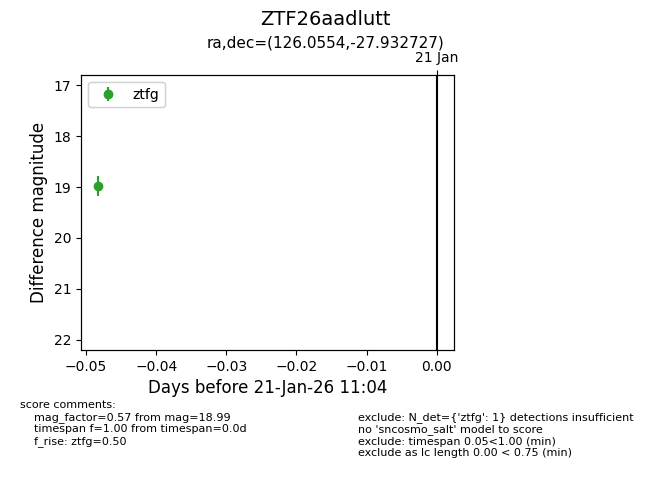
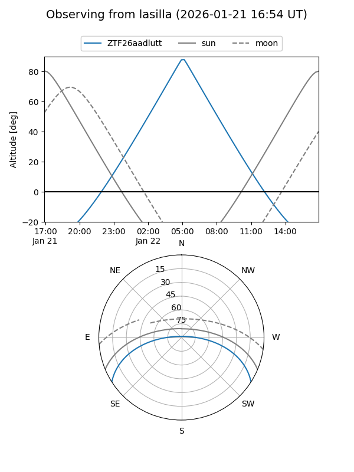
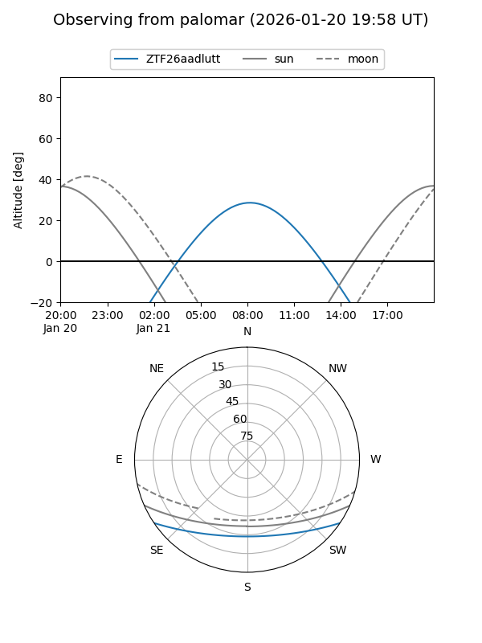

ZTF26aadlutt
Target ZTF26aadlutt at 2026-01-21 11:06
Aliases and brokers:
FINK: link
Lasair: link
ALeRCE: link
alt names
ZTF26aadlutt (ztf,fink_ztf)
Coordinates:
equatorial (ra, dec) = 126.0554,-27.93273
equatorial (HMS+DMS) = 08:24:13.31,-27:55:57.82
galactic (l, b) = (248.2599,+5.51511)
Flags:
Photometry:
last ztfg=18.99
1 ztfg detections
Lightcurve

Visibility


Additional plots